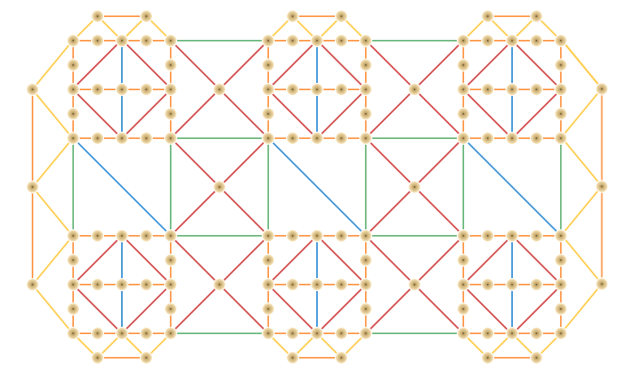

LoRA / QLoRA
8 GB GPU constraints
MS thesis
LoRA on an 8 GB GPU — Thesis Study
MS thesis project on parameter-efficient fine-tuning (LoRA) under strict 8 GB GPU constraints.
This page summarizes the study design, tracks, and the funding that supports the project.
Track 1 Text model adaptation ▶
- Small LLMs fine-tuned with LoRA/QLoRA
- Task performance (accuracy, eval metrics)
- Throughput (tokens/sec)
- VRAM usage and paging behavior
Track 2 Vision model adaptation ▶
- Training ViT-tiny with LoRA / DoRA
- Rank & placement tradeoffs
- Accuracy vs compute/memory use
Track 3 Multi-adapter serving ▶
- Serving many LoRA adapters on one base model
- Latency and time-to-first-token
- Merged vs unmerged adapter behavior
Track 4 Workflow, cost, credits, and training process ▶

Track 4 analyzes the end-to-end workflow and financial efficiency of LoRA training, made possible by $150 Tinker compute credits. It compares local 4060 Ti runs against credit-funded cloud training (A100s, HF Spaces, Gradio apps, etc.).
Core objectives:
- Measure wall-clock time, energy & CO₂ (Avinash methodology)
- Record $ cost per experiment (Tracks 1–3)
- Analyze cost-per-10k tokens and cost-per-1% accuracy
- Determine the break-even point: local GPU vs cloud compute
Applied demonstration:
- Prototype a LoRA-tuned image generator
- Train locally → scale with credits → deploy on HF Spaces
- Produce a reproducible, budget-aware workflow
For details on the funding program: Thinking Machines – Tinker